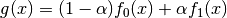
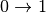
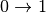
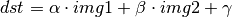

Arithmetic Operations on Images
Goal
- Learn several arithmetic operations on images like addition, subtraction, bitwise operations etc.
- You will learn these functions : cv2.add(), cv2.addWeighted() etc.
Image Addition
You can add two images by OpenCV function, cv2.add() or simply by numpy operation, res=img1+img2. Both images should be of same depth and type, or second image can just be a scalar value.
Note
There is a difference between OpenCV addition and Numpy addition. OpenCV addition is a saturated operation while Numpy addition is a modulo operation.
For example, consider below sample:
>>> x=np.uint8([250])
>>> y=np.uint8([10])
>>> printcv2.add(x,y)# 250+10 = 260 => 255
[[255]]
>>> printx+y# 250+10 = 260 % 256 = 4
[4]
It will be more visible when you add two images. OpenCV function will provide a better result. So always better stick to OpenCV functions.
Image Blending
This is also image addition, but different weights are given to images so that it gives a feeling of blending or transparency. Images are added as per the equation below:

By varying  from , you can perform a cool transition between one image to another.
from , you can perform a cool transition between one image to another.
Here I took two images to blend them together. First image is given a weight of 0.7 and second image is given 0.3. cv2.addWeighted() applies following equation on the image.

Here  is taken as zero.
is taken as zero.
Practice in OpenCV Laboratory:
cv2.imshow('dst',dst)
cv2.waitKey(0)
cv2.destroyAllWindows()
Help buttons:
Check the result below:

Bitwise Operations
This includes bitwise AND, OR, NOT and XOR operations. They will be highly useful while extracting any part of the image (as we will see in coming chapters), defining and working with non-rectangular ROI etc. Below we will see an example on how to change a particular region of an image.
I want to put OpenCV logo above an image. If I add two images, it will change color. If I blend it, I get an transparent effect. But I want it to be opaque. If it was a rectangular region, I could use ROI as we did in last chapter. But OpenCV logo is a not a rectangular shape. So you can do it with bitwise operations as below:
Practice in OpenCV Laboratory:
# Load two images
# I want to put logo on top-left corner, So I create a ROI
# Now create a mask of logo and create its inverse mask also
# Now black-out the area of logo in ROI
# Take only region of logo from logo image.
# Put logo in ROI and modify the main image
cv2.imshow('res',img1)
cv2.waitKey(0)
cv2.destroyAllWindows()
Help buttons:
See the result below. Left image shows the mask we created. Right image shows the final result. For more understanding, display all the intermediate images in the above code, especially img1_bg and img2_fg.

Additional Resources
Exercises
- Create a slide show of images in a folder with smooth transition between images using
cv2.addWeightedfunction